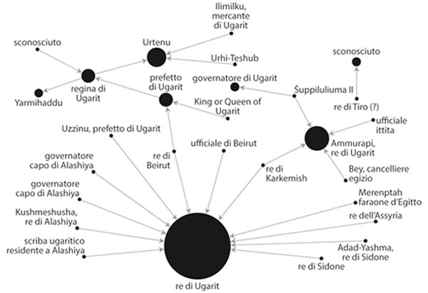
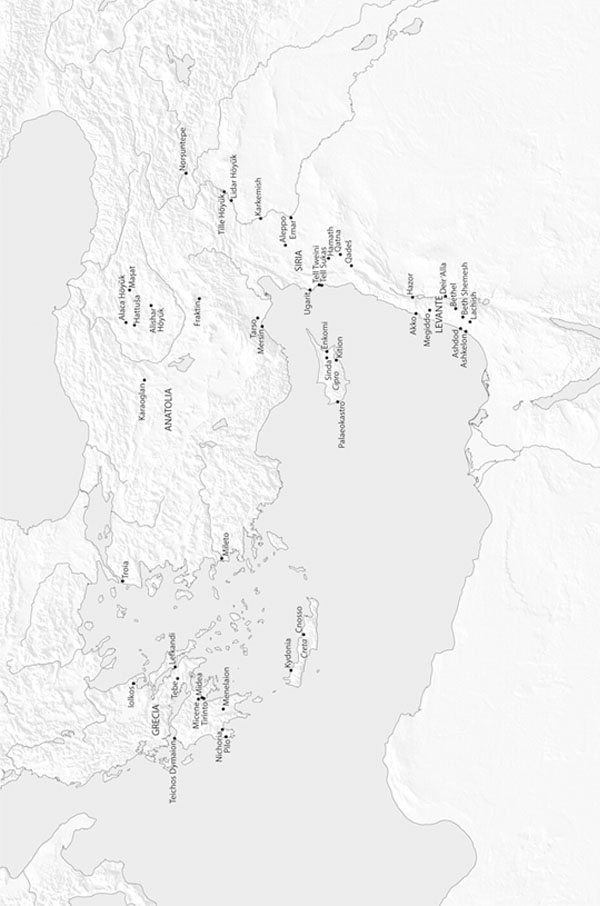
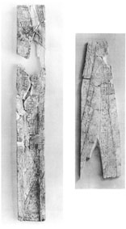

Ecco il momento che abbiamo atteso a lungo: il culmine della storia e il drammatico inizio della fine di oltre tre secoli di economia globalizzata, che era stata il marchio distintivo della tarda Età del Bronzo. Il XII secolo a.C., come vedremo in quest’atto finale, è contraddistinto da storie di rovina e di distruzione e non più da gloriose attività di commercio e di relazioni internazionali, anche se preferiamo cominciare in bellezza, parlando appunto della ricchezza dei rapporti globali.
Fortuna audaces iuvat, dice il celebre motto, ma in alcuni casi anche gli sprovveduti sono fortunati. Perché fu la scoperta fortuita di un contadino, del tutto digiuno di archeologia, che portò alla luce la città e il regno di Ugarit, situati sulla costa settentrionale della Siria. Nel 1929 il ritrovamento di una tomba nella baia di Minet el-Beida aveva spinto un archeologo francese in quella regione. Gli scavi portarono rapidamente alla luce le rovine di una città portuale, a cui si dà lo stesso nome di Minet el-Beida. A distanza di ottocento metri, sulla terraferma, sotto una collinetta artificiale di nome Ras Shamra, qualche tempo dopo si scoprì la capitale di Ugarit.1
Ugarit e Minet el-Beida da allora sono state oggetto di scavi francesi quasi ininterrotti, prima sotto la direzione di Claude Schaeffer, dal 1929 in poi, e, più recentemente, dal 1978 al 1998, di Marguerite Yon. Dal 1999, un’équipe franco-siriana ha condotto congiuntamente gli scavi.2 Con il lavoro di tutti si è potuto far affiorare una città commerciale prosperosa, razionale e indaffarata, dotata di un florido porto, distrutta senza preavviso e abbandonata rapidamente dopo l’inizio del XII secolo a.C. Tra le rovine sono stati trovati prodotti provenienti da tutto il Mediterraneo orientale e dall’Egeo; un magazzino a Minet el-Beida conteneva ancora ottanta anfore cananee, purtroppo scoperte negli anni trenta, per cui non fu possibile eseguire analisi scientificamente rigorose del loro contenuto.3
All’interno delle case private e del palazzo reale di Ugarit, fin dagli anni cinquanta sono venuti alla luce alcuni importanti archivi, che documentano le attività economiche di diversi mercanti e della famiglia reale. Le lettere e gli altri documenti dell’archivio furono scritti su tavolette d’argilla, come succedeva solitamente nell’Età del Bronzo, ma in questo caso le tavolette contenevano iscrizioni incise in lingue diverse: a volte l’accadico, a volte l’ittita, a volte l’egizio e a volte lingue meno utilizzate, come l’urrita.
C’era anche un’altra lingua che gli studiosi non avevano mai trovato in precedenza. Fu rapidamente decifrata e ora viene chiamata lingua ugaritica. L’idioma si serve di una delle prime scritture alfabetiche finora conosciute (tranne per il fatto che, in realtà, nei testi c’erano due scritture alfabetiche, una con ventidue segni, come il fenicio, e una con otto segni aggiuntivi).4
Questi testi ugaritici, il cui corpus è talmente vasto da aver dato vita a una sezione accademica a parte (Studi ugaritici), comprendono non solo gli archivi e la corrispondenza dei mercanti e del re, ma anche esemplari di letteratura, mitologia, storia, religione e altri elementi che attestano la presenza di una fiorente civiltà, consapevole del proprio retaggio. Quindi possiamo ricostruire la città di Ugarit dalle sue rovine e possiamo farlo in base ai testi, alla vita quotidiana e alle credenze dei suoi abitanti. È ormai appurato che gli abitanti della città adoravano un pantheon di divinità, tra cui troneggiano El e Baal. E sappiamo i nomi dei re, da Ammistamru I e Niqmaddu II, le cui lettere ad Amenofi III e ad Akhenaton si trovano nell’archivio di Amarna in Egitto, sino all’ultimo re, Ammurapi, che governò nella prima decade del XII secolo a.C. Sappiamo anche che i re di Ugarit sposavano principesse della vicina comunità di Amurru, e forse anche del più vasto regno degli Ittiti, in matrimoni dinastici arricchiti da doti regali, anche se almeno uno di questi sposalizi finì con un divorzio colmo di amarezza che si trascinò a corte per anni.5
I cittadini e i re di Ugarit ebbero floride relazioni commerciali per tutta la durata di vita della loro città. Si trattava in tutta evidenza di un grande mercato internazionale, con navi di molti paesi diversi che attraccavano nel porto di Minet el-Beida. Durante la prima metà del XIV secolo è possibile che Ugarit avesse prestato fedeltà agli Egizi, ma senza alcun dubbio dalla seconda metà del secolo in avanti fu uno stato vassallo degli Ittiti, dopo che Šuppiluliuma aveva conquistato la regione nel 1350-1340 a.C. circa. I testi presenti nel sito, trovati in archivi diversi, dei quali la maggioranza risale agli ultimi cinquant’anni di vita della città, documentano i rapporti tra Ugarit e numerose altre comunità di varia grandezza, tra cui l’Egitto, Cipro, l’Assiria, gli Ittiti, Karkemish, Tiro, Beirut, Amurru e Mari. Recentemente, a questa lista è stato aggiunto l’Egeo.6
Le tavolette citano anche specificamente l’esportazione da Ugarit di merci deperibili, come lana tinta, abiti di lino, olio, oggetti di piombo, rame e bronzo, soprattutto verso gli Assiri, che erano situati a est, in Mesopotamia, come pure intensi erano i rapporti commerciali con Beirut, Tiro e Sidone, sulla costa fenicia.7 A Ugarit sono stati trovati anche oggetti importati dall’Egeo, da Egitto, Cipro e Mesopotamia, in particolare vasellame miceneo, una spada di bronzo che reca inciso il nome del faraone Merenptah, centinaia di frammenti di anfore d’alabastro e altri articoli di lusso.8 Queste e altre merci più banali, come vino, olio d’oliva e farina, raggiungevano Ugarit grazie all’opera di mercanti come Sinaranu, di cui abbiamo già parlato, la cui nave salpò per Creta e poi fece ritorno verso la metà del XIV secolo a.C. Sappiamo che la popolazione ugaritica era sufficientemente agiata da inviare ogni anno tributi agli Ittiti, che consistevano in cinquecento sicli d’oro, lana tinta e abiti, oltre a coppe d’oro e d’argento per il re ittita, le regine e gli alti dignitari.9
Grazie ad altre tavolette, molte delle quali sono state trovate all’interno delle case della città negli ultimi decenni (alcune hanno cambiato radicalmente quel che sapevamo sulla fine della città), abbiamo notizia di altri mercanti ugaritici, che furono attivi più tardi, all’epoca della distruzione della città, all’inizio del XII secolo.10 Una di queste case è stata battezzata la «casa di Yabninu», ed è situata nella zona meridionale, vicino al palazzo reale. Gli scavi della casa non sono stati ancora completati, ma si sa già che la sua superficie era di circa cento metri quadrati, da cui si deduce che Yabninu era un mercante di un certo successo. Le sessanta o più tavolette che sono state scoperte tra le rovine di questa casa probabilmente erano conservate al secondo piano e comprendono documenti scritti in accadico, ugaritico e nella lingua ciprioto-minoica, che non è ancora stata decifrata e che era soprattutto utilizzata nell’isola di Cipro (si trovano iscrizioni di questo tipo anche su vasi scoperti a Tirinto, in Grecia). I testi scritti sulle tavolette, come pure gli oggetti importati trovati dentro la casa, documentano che le attività mercantili di Yabninu riguardavano rapporti con Cipro, con la costa levantina più meridionale, con l’Egitto e con il Mar Egeo.11
Un’altra serie di tavolette è stata rinvenuta nella cosiddetta «casa di Rapanu», dove furono compiuti degli scavi nel 1956 e nel 1958. Le tavolette, più di duecento, sono state subito studiate e poi pubblicate un decennio più tardi, nel 1968. Attestano che Rapanu era uno scriba e un consigliere d’alto rango del re di Ugarit, quasi sicuramente Ammistamru II (1260-1235 a.C. circa). Sembra che Rapanu sia stato coinvolto in trattative delicate ai massimi livelli, a quanto suggerisce il contenuto dei documenti. I testi includono alcune lettere scambiate tra il re di Ugarit e il re di Cipro (Alashiya), scritte all’epoca in cui i Popoli del Mare minacciavano entrambi. Ci sono anche lettere scambiate con il re della vicina Karkemish e con il più lontano faraone egizio; l’ultimo fascicolo riguarda un incidente non meglio identificato che coinvolse dei Cananei sulla costa levantina.12
Una delle lettere parla del commercio d’olio tra Ugarit e Cipro. È stata scritta da Niqmaddu III, il penultimo re di Ugarit, e fu inviata al re di Alashiya, che chiama suo «padre», definendo se stesso «tuo figlio».13 A meno che il re di Ugarit non abbia sposato una principessa di Cipro, fatto che oggi è ormai escluso, sembra che l’uso della parola «padre» segua la terminologia generica dell’epoca, che puntava a stabilire relazioni familiari pur riconoscendo nello stesso tempo la superiorità o l’età relativa del re di Cipro sul re di Ugarit. Un’altra delle lettere rinvenute in questa casa è già stata citata: si tratta della lettera che descrive l’arrivo delle navi nemiche a Ugarit, quella che Schaeffer pensava si trovasse in una fornace, pronta per la cottura prima dell’invio a Cipro. Ne parleremo ancora nel prossimo capitolo.
Alcune delle tavolette scoperte più recentemente provengono dalla cosiddetta «casa di Urtenu». Questa dimora è stata scoperta per caso nel 1973, nella zona meridionale del sito, durante la costruzione di un bunker militare. Agli archeologi venne accordato il permesso di scavare nel mucchio di detriti creato durante lo scavo, che purtroppo aveva accidentalmente distrutto il centro della casa: vennero comunque trovate le tavolette, che sono state ormai tutte pubblicate. Le più nuove provengono dai rigorosi scavi del 1986-1992 e sono state anch’esse pubblicate; quelle rinvenute negli scavi del 1994-2002 sono invece ancora in corso di studio. Complessivamente, in questo archivio ci sono più di 500 tavolette (di cui 134 trovate nel 1994), con alcuni testi scritti in lingua ugaritica e la maggioranza in accadico. La corrispondenza include lettere dei re d’Egitto, Cipro, Hatti, Assiria, Karkemish, Sidone, Beirut e forse Tiro.14 Sembra che una delle più antiche fosse stata inviata da un re di Assiria, forse Tukulti-Ninurta I, a un re di Ugarit, forse Ammistamru II o Ibirana, e riguarda la battaglia in cui Tukulti-Ninurta e gli Assiri sconfissero Tudhaliya IV e gli Ittiti.15

Figura 10
Lettere reali nell’archivio di Urtenu a Ugarit (schema illustrativo non esaustivo; nodi = persone che mandano o ricevono lettere; linee = coppie tra le quali vengono spedite le lettere; dimensione dei cerchi = numero di lettere. Schema di D.H. Cline).
Come ha fatto notare uno degli archeologi del sito, le tavolette dimostrano che Urtenu fu attivo all’inizio del XII secolo a.C. e che godeva di grande prestigio. Pare che fosse l’agente di un’importante ditta commerciale di proprietà del genero della regina, che aveva rapporti commerciali con la città di Emar, nell’interno della Siria, come pure con la vicina Karkemish. Stipulava anche affari con l’isola di Cipro e trattava con destinazioni ancora più lontane.16 In effetti, le cinque lettere trovate nella casa, che erano state spedite da Cipro, sono molto importanti, perché menzionano per la prima volta il nome di un re cipriota dell’Età del Bronzo: un uomo di nome Kushmeshusha. Ci sono due lettere di questo re, e anche due lettere di autorevoli governatori della città, e perfino, fatto assai curioso, una lettera di uno scriba ugaritico che, all’epoca, viveva a Cipro. Queste cinque lettere ora si uniscono alle altre quattro di Alashiya che erano state trovate nella casa di Rapanu.17
Ci sono due ulteriori lettere nella casa, che contengono riferimenti ai due «uomini Hiyawa» che si racconta abbiano aspettato una nave proveniente da Ugarit nelle terre di Lukka (Licia), nell’Anatolia sud-occidentale. Le lettere furono mandate ad Ammurapi, l’ultimo re di Ugarit, da un re ittita, che potrebbe essere Šuppiluliuma II, e a un suo alto ufficiale. Si tratta dei primi riferimenti conosciuti al popolo egeo negli archivi di Ugarit, perché «Hiyawa» è senza dubbio collegata alla parola ittita «Ahhiyawa» che, come abbiamo visto, per molti studiosi si riferisce ai Micenei e agli Egei dell’Età del Bronzo.18
C’è anche una lettera del faraone Merenptah d’Egitto, che risponde a una richiesta dal re di Ugarit, forse Niqmaddu III, oppure Ammurapi, che chiedeva l’invio di uno scultore, in modo che si potesse scolpire una statua del faraone ed erigerla nella città, davanti al tempio di Baal. Anche se rifiuta questa richiesta, nella sua lettera il faraone fa una lista di beni di lusso che dovevano essere inviati dall’Egitto a Ugarit. Le merci dovevano venire caricate su una nave diretta a Ugarit, diceva, e dovevano comprendere più di cento tra abiti e pezze di tessuto, oltre ad altri prodotti, come ebano e lastre di pietra rossa, bianca e blu.19 Osserviamo ancora una volta che quasi tutti questi articoli erano deperibili e non poterono pertanto sopravvivere per l’indagine archeologica. È tuttavia utile che siano citati in questo testo; in caso contrario non avremmo mai saputo della loro esistenza e degli scambi tra Egitto e Ugarit.
Un’altra lettera di questo archivio proviene da un messo/rappresentante di nome Zu-Aštarti, che parla della nave a bordo della quale aveva preso il largo da Ugarit. Racconta di essere stato fatto prigioniero lungo il viaggio. Alcuni studiosi si sono chiesti se era stato rapito, ma egli scrive soltanto: «Il sesto giorno ero in mare. Quando il vento mi portò via, mi ritrovai nel territorio di Sidone. Da Sidone al territorio di Ušnatu sono stato portato e sono stato detenuto a Ušnatu. Possa mio fratello saperlo… Dite al re: “Se hanno ricevuto i cavalli che il re ha dato al messaggero della terra di Alashiya, poi un collega del messaggero verrà da voi. Possa dargli di persona questi cavalli”».20 Non è chiaro perché fosse stato «detenuto» a Ušnatu né perché la lettera si trovasse negli archivi di Urtenu, anche se è possibile che a Ugarit, in quell’epoca, il commercio di cavalli fosse un commercio protetto dallo stato. Una lettera contemporanea del re ittita Tudhaliya IV ad Ammistamru II, trovata nella casa di Rapanu, dichiara infatti che il re di Ugarit non permetteva che i cavalli venissero esportati in Egitto dai messaggeri/mercanti Ittiti o Egizi.21
Le prove testuali dei diversi archivi delle case di Ugarit dimostrano che il commercio e i rapporti internazionali furono fiorenti nella città sino all’ultimo momento. Uno degli studiosi che ha pubblicato le lettere della casa di Urtenu osservava, vent’anni fa, che non c’era quasi cenno di crisi, tranne una menzione a navi straniere in una sola lettera; sembra che le rotte commerciali siano rimaste aperte fino all’ultimo.22 Lo stesso avvenne a Emar, sul fiume Eufrate, a est della Siria, dove è stato osservato che «gli scribi svolsero fino alla fine un’attività normale».23

Figura 11
I siti distrutti attorno al 1200 a.C.
Ugarit venne distrutta, in un modo quasi certamente molto violento, durante il regno del re Ammurapi, probabilmente tra il 1190 e il 1185 a.C. Non fu nuovamente abitata fino al periodo persiano, circa 650 anni dopo.24 Gli archeologi accennano a «prove di distruzione e di incendi in tutta la città», con «mura crollate, calcinacci anneriti dal fuoco e mucchi di cenere», e un livello di detriti che, in alcuni luoghi, raggiungeva i due metri. Marguerite Yon, l’attuale direttrice degli scavi, dice che i soffitti e i terrazzi nei quartieri residenziali furono trovati già collassati e che altrove le mura erano ridotte a «informi mucchi di pietrisco». Pensava che la distruzione fosse stata provocata da un attacco nemico, non da un terremoto, come era stato suggerito prima da Schaeffer, e che la città era stata teatro di una violenta battaglia, con numerosi scontri per le strade. La tesi sarebbe dimostrata dalla «presenza di numerose punte di frecce disperse tra le rovine distrutte o abbandonate» e anche dal fatto che gli abitanti – più o meno ottomila – fuggirono in tutta fretta e non fecero ritorno, neppure per riprendersi ciò che rimaneva dei loro beni, che alcuni avevano sepolto prima di fuggire.25
La data esatta della distruzione è stata recentemente oggetto di molti dibattiti. La prova più convincente è una lettera trovata nel 1986 nella casa di Urtenu. La lettera era stata inviata ad Ammurapi, il re di Ugarit, da un cancelliere egizio chiamato Bey che, come sappiamo da fonti egizie, fu condannato a morte nel quinto anno del faraone Siptah. Siptah fu il penultimo faraone della Diciannovesima Dinastia d’Egitto, che governò nel 1195-1189 a.C. circa, cioè pochi anni prima di Ramses III, della Ventesima Dinastia. La lettera può quindi essere datata con una certa sicurezza a un’epoca precedente all’esecuzione di Bey nel 1191 a.C., il che significa che la distruzione della città non poté avvenire prima di questa data. Di solito la distruzione della città viene datata tra il 1190 e il 1185 a.C., anche se tecnicamente avrebbe potuto avvenire più tardi.26 Un recente articolo ha sottolineato che questa data può essere confermata sulla base di un’osservazione astronomica trovata a Ugarit su un’altra tavoletta. L’iscrizione racconta di un’eclisse di sole, che può essere datata al 21 gennaio 1192 a.C., il che significa che la città non poteva essere stata distrutta prima di allora.27
Contrariamente alle precedenti narrazioni divulgative sulla fine di Ugarit,28 per datare la distruzione o identificare gli aggressori probabilmente non possiamo utilizzare la celebre lettera degli Archivi del Sud, trovata nella Corte V del palazzo di Ugarit. Si tratta della lettera che Schaeffer pensava fosse stata trovata in una fornace, prima di essere inviata al re di Cipro. «Padre mio, ora le navi del nemico sono giunte. Hanno messo a fuoco le mie città e arrecato danno alla mia terra». Secondo il racconto originario, la lettera era stata trovata in una fornace, dove era stata messa per essere cotta assieme a più di settanta tavolette. Gli archeologi e altri studiosi inizialmente avevano ipotizzato che le navi nemiche fossero ritornate e avessero saccheggiato la città prima che la lettera potesse essere inoltrata con la sua urgente richiesta di aiuto: questa storia ha continuato a essere raccontata anche nelle relazioni accademiche, oltre che tra la gente comune. Ma un recente riesame del luogo di ritrovamento, svolto da nuovi ricercatori, indica che essa non fu affatto trovata in una fornace, bensì, probabilmente, era stata conservata in un canestro caduto dal secondo piano dopo che l’edificio che la conservava era stato abbandonato.29
In sostanza, anche se la lettera può essere utilizzata per discutere della presenza delle navi nemiche e degli invasori, non è chiaro se essa risale agli ultimi giorni di Ugarit o a un periodo leggermente antecedente. E anche se fa davvero riferimento alle navi dei Popoli del Mare, non è chiaro se si riferisca alla prima ondata di invasori, quelli che attaccarono l’Egitto nel 1207 a.C., o alla seconda ondata, che combatté contro Ramses III nel 1177 a.C.
Anche il sito di Emar, nell’interno della Siria, con cui Ugarit era in contatto, fu distrutto più o meno nello stesso periodo, nel 1185 a.C., come sappiamo dalla data apposta su un documento legale trovato nel sito. Tuttavia, anche a Emar non è chiaro chi provocò la distruzione. Le tavolette ritrovate si riferiscono a «orde» non meglio specificate, ma non indicano in modo particolare i Popoli del Mare, come hanno ormai osservato diversi studiosi.30
Il sito di Ras Bassit, sulla frontiera settentrionale di Ugarit, fu distrutto più o meno nello stesso periodo. Gli archeologi pensano che fosse un avamposto ugarita e sostengono che, nel 1200 a.C. circa, fu «in parte evacuato, in parte abbandonato, e poi incendiato, come gli altri siti della regione». Si attribuisce comunemente questa distruzione ai Popoli del Mare, ma l’attribuzione non è certa neppure in questo caso.31
Una situazione analoga è stata descritta a Ras Ibn Hani, sulla costa a sud di Ugarit, che si pensa sia stata una residenza secondaria dei re ugaritici durante il XIII secolo. Gli archeologi e tutti coloro che hanno esaminato il sito immaginano che il luogo sia stato evacuato poco prima della distruzione di Ugarit e poi distrutto dai Popoli del Mare. Almeno parte del sito fu immediatamente rioccupato, come lo fu Ras Bassit, ed è sulla base del vasellame trovato in questi livelli di ri-occupazione che gli archeologi hanno identificato con i Popoli del Mare i distruttori e i ri-occupatori, problema che discuteremo in seguito.32
Forse la prova migliore, e sicuramente la più recente, di una distruzione a tappeto di tutta l’area in questo periodo è stata trovata a Tell Tweini, il sito del porto di Gibala della tarda Età del Bronzo nel regno di Ugarit, situato circa trenta chilometri a sud della moderna città di Lattakia. Qui, la città fu abbandonata dopo una «grave distruzione» alla fine della tarda Età del Bronzo. Secondo gli archeologi, «la sezione stratigrafica contiene resti che attestano un conflitto (punte di freccia di bronzo disseminate in tutta la città, mura crollate, case bruciate), cenere derivante dalla distruzione delle case e mucchi di ceramiche cronologicamente ben ordinabili e frantumate dalla distruzione della città».33
Datando la sezione stratigrafica utilizzando il radiocarbonio e servendosi di «riferimenti alle fonti antiche epigrafico-letterarie, sui re ittiti-levantini-egizi e sulle osservazioni astronomiche», gli archeologi dicono che sono infine stati in grado «di datare precisamente l’invasione dei Popoli del Mare» e di «offrire la prima cronologia esatta per questo periodo chiave della società umana».34 Le date dello strato di cenere (Livello 7A) stabilite con il radiocarbonio secondo il laboratorio d’indagine risalgono al 1192-1190 a.C.35 Pur avendo attribuito una data alla distruzione di questo sito, gli archeologi hanno offerto solo prove indiziarie per accusare i Popoli del Mare, come vedremo sotto.
È anche importante sottolineare che questa data (1192-1190 a.C.) risale a 13-15 anni prima dello scontro di Ramses III con i Popoli del Mare nella battaglia del 1177 a.C. Anche le distruzioni avvenute altrove, che risalgono al 1185 a.C., risalgono a otto anni prima del conflitto. Forse dovremmo chiederci quanto abbia impiegato questa presunta ondata migratoria a farsi strada attraverso il Mediterraneo fino all’Egitto. Non è facile rispondere a questa domanda: dipende naturalmente dalla capacità organizzativa, dai mezzi di trasporto e dagli obiettivi che i Popoli del Mare si erano dati, tra gli altri fattori.
Infine, dobbiamo considerare un sito che si trova più a sud: Tell Kazel, nella regione di Amurru, che potrebbe essere il sito dell’antica Sumur, la capitale di questo regno. Il sito fu distrutto alla fine della tarda Età del Bronzo e gli archeologi hanno ipotizzato, in modo plausibile, che siano stati i Popoli del Mare, specialmente perché Ramses III cita specificamente questo regno (parla di Amurru) nelle sue iscrizioni. Ma, proprio nel livello di occupazione appena precedente alla distruzione, gli archeologi hanno identificato quelli che sembrano essere vasi micenei prodotti localmente e altri indizi dell’insediamento di nuovi abitanti provenienti dall’Egeo e dal Mediterraneo occidentale.36 Per questo motivo Reinhard Jung, dell’Università di Vienna, che ha studiato i vasi di Tell Kazel, ha ipotizzato che «prima della grande distruzione dei Popoli del Mare, arrivarono per mare gruppi più esigui e si stabilirono sino a Tell Kazel in stretto contatto con la popolazione locale». Jung lo considera un modello di migrazione a piccola scala di provenienza egea, ma lascia intendere che alcune delle popolazioni coinvolte avevano radici nell’Italia meridionale.37 Se è giusta, questa interpretazione aggiunge ulteriore complessità al periodo, al punto da far pensare che la distruzione provocata dalla seconda ondata dei Popoli del Mare, del 1177 a.C., avrebbe potuto coinvolgere migranti con le stesse origini, che erano arrivati in precedenza e si erano già insediati nel Mediterraneo orientale, forse durante o dopo le incursioni dei Popoli del Mare nel quinto anno di Merenptah, di nuovo nel 1207 a.C.
Durante lo stesso periodo, nel XII secolo a.C., vennero distrutte alcune città nella Siria meridionale e a Canaan. Per quanto riguarda la Siria, non si sa chi le distrusse né esattamente quando, anche se, nel livello di distruzione del piccolo sito di Deir ‘Alla, in Giordania, è stato trovato un vaso con il cartiglio della regina egizia Tausert, che era la vedova del faraone Seti II che occupò il trono tra il 1187 e il 1185 a.C. Quindi è probabile che la distruzione avvenne poco dopo questo periodo. Lo stesso vale per i siti di Akko, oggi in Israele, dove tra i cumuli di detriti è stato ritrovato uno scarabeo sacro simile a quello di Tausert.38
Forse i siti più celebri di questa regione, nei quali ci sono prove certe della distruzione, sono Megiddo e Lachish, ma la natura e la data del disastro sono ancora oggetto di dibattiti. Sembra che entrambe le città siano state distrutte parecchi decenni più tardi di quel che ci si sarebbe aspettato dalla cronologia dei siti di cui abbiamo parlato in precedenza: Megiddo e Lachish sembrano essere state rase al suolo verso il 1130 a.C. e non nel 1177 a.C.39
A Megiddo, nella valle di Jezreel, attuale Israele – il sito della biblica Armageddon – sono stati trovati gli strati di circa venti città, una sopra l’altra. Una di queste, più precisamente la settima, mostra due fasi che sono state etichettate come VIIB e VIIA, nelle quali la città fu violentemente distrutta nel XIII e nel XII secolo a.C rispettivamente, o forse in un’unica distruzione nel XII secolo.
Tradizionalmente, da quando gli archeologi dell’Università di Chicago hanno pubblicato i risultati dei loro scavi negli anni 1925-39, si accetta il fatto che lo strato VIIB fosse stato distrutto tra il 1250 e il 1200 a.C., mentre la città successiva dello strato VIIA era caduta verso il 1130 a.C. circa. In questi strati sono stati trovati i resti di un palazzo cananeo, o forse le macerie di due palazzi, uno costruito sulle rovine dell’altro.
Secondo gli archeologi della scuola di Chicago, il palazzo dello strato VIIB «subì una distruzione violenta così intensa che i costruttori dello strato VIIA trovarono più opportuno livellare i detriti esistenti e costruire sopra di essi invece che rimuoverli completamente, com’era la procedura nelle tecniche di ricostruzione». Le stanze «erano colme di pietre cadute da un’altezza di almeno un metro e mezzo ... lastre orizzontali bruciacchiate trovate qua e là contro le pareti delle stanze a nord della corte ... costituiscono un pavimento unico in tutto il palazzo».40 Si pensò allora che lo strato VIIA del palazzo, costruito direttamente sopra il precedente, fosse durato almeno fino al 1130 a.C.
Recentemente tuttavia, David Ussishkin, un archeologo dell’Università di Tel Aviv, co-direttore degli scavi di Megiddo e da poco in pensione, ha suggerito, in modo assai convincente, che gli archeologi di Chicago hanno fatto un errore di interpretazione dei diversi livelli. Invece di due palazzi, uno sopra l’altro, Ussishkin pensa che dobbiamo intendere la struttura come un unico palazzo a due piani, appena ritoccato durante la transizione tra il livello VIIB e il livello VIIA nel 1200 a.C. Ci fu un’unica distruzione, dice: un grande incendio che distrusse il palazzo alla fine dello strato VIIA. Secondo Ussishkin, quello che gli archeologi di Chicago avevano interpretato come «palazzo VIIB» era invece semplicemente il piano basso, mentre il «palazzo VIIA» era il piano superiore. Il tempio principale della città (il cosiddetto Tempio della Torre) fu distrutto nello stesso periodo, ma gli scavi più recenti dimostrano che sono sopravvissuti quasi tutti i resti della città; sembra che quella volta vennero incendiate solo le aree destinate alle élite.41
La distruzione dello strato VIIA di solito è datata al 1130 a.C., sulla base di due oggetti, trovati tra le macerie, su cui è apposto il cartiglio egizio. Il primo è un astuccio d’avorio per una penna che reca inciso il nome di Ramses III e venne trovato tra altri tesori in una stanza del palazzo, in un luogo pieno dei detriti provocati dalla distruzione.42 Questo attesterebbe il fatto che la distruzione ebbe luogo durante o dopo il regno di Ramses III, nel 1177 a.C. o poco dopo.
I pezzi d’avorio trovati in questa stanza del palazzo sono tra gli oggetti più noti che siano stati recuperati nel sito di Megiddo. Includono scatole e ciotole in frammenti, lapidi, cucchiai, piatti, tavolette da gioco con relative pedine, coperchi di anfore, pettini e altri articoli. Attualmente sono esposti all’Oriental Institute dell’Università di Chicago e nel Rockefeller Museum a Gerusalemme. Non si sa perché questi oggetti fossero riuniti insieme, né perché si trovassero in quella particolare ala del palazzo. Tuttavia, hanno ricevuto molta attenzione nel corso degli anni, perché sia gli oggetti sia le scene incise su di essi mostrano uno stile che si può definire «globalizzato» e che ora si definisce Stile internazionale, che è stato trovato anche altrove, ad esempio nei siti di Ugarit e Micene. Questo particolare stile combina elementi della cultura micenea, cananea ed egizia, creando oggetti ibridi, che caratterizzano quest’epoca cosmopolita.43

Figura 12
Astuccio d’avorio di Ramses III trovato a Megiddo (da Loud 1939, tav. 62. Per gentile concessione dell’Oriental Institute dell’Università di Chicago).
Il secondo oggetto importante di Megiddo è il piedestallo di una statua di bronzo che reca un’iscrizione con il nome del faraone Ramses VI, il quale regnò alcuni decenni più tardi, nel 1141-1133 a.C. circa. L’oggetto non fu rinvenuto in un contesto archeologico ben stabilito, ma sotto un muro dello strato VIIB, nell’area residenziale del sito. Come osserva Ussishkin, non si tratta di un contesto affidabile, poiché lo strato VIIB era anteriore a Ramses VI. Evidentemente il piedestallo della statua fu deliberatamente sepolto in una fossa, scavata da un abitante di epoca successiva, nel periodo VIIA oppure nella successiva città VIB-A dell’Età del Ferro. Il basamento abitualmente è attribuito dagli archeologi allo strato VIIA, ma si tratta solamente di una congettura.44
Questi due oggetti, di Ramses III e VI, nelle pubblicazioni sono sempre discussi assieme e quindi la distruzione di Megiddo VIIA viene datata in concomitanza con il regno di Ramses VI, ovvero nel 1130 a.C. Tuttavia, poiché il piedestallo della statua di bronzo non è stato trovato nel giusto contesto, non dovrebbe essere utilizzato per datare la fine di Megiddo VIIA. D’altra parte, l’astuccio d’avorio di Ramses III era sigillato nello strato di distruzione di VIIA e quindi poteva affidabilmente essere utilizzato per attribuire una data limite, prima della quale la città non poteva essere stata distrutta, ovvero prima del regno di quel faraone. E questo concorda con la prova della distruzione di altri siti del Medio Oriente di cui abbiamo già parlato.
Tuttavia, l’archeologia è un campo che evolve continuamente e si arricchisce di nuovi dati e nuove analisi, che richiedono una continua riformulazione dei concetti. Da questo punto di vista, gli studi odierni che datano i reperti del livello di distruzione di VIIA, condotti con il radiocarbonio, indicano come verosimile la data del 1130 a.C., o perfino un po’ dopo. Se ciò fosse esatto, significherebbe che Megiddo fu distrutta più di quarant’anni dopo che i Popoli del Mare arrivassero nella regione, nel 1177 a.C.45 In ogni caso, come ha osservato Ussishkin, «la mancanza di fonti scritte lascia [aperta] la questione di chi fu il responsabile della distruzione dello strato VIIA ... la città potrebbe essere stata attaccata da gruppi invasori dei Popoli del Mare, da elementi cananei levantini, da Ebrei oppure da un’armata mista, formata da diversi gruppi».46 In altre parole, a Megiddo abbiamo la stessa situazione che abbiamo già visto a Hazor, dove erano state distrutte le zone della città destinate alle élite, e gli autori della distruzione non hanno potuto essere identificati.
Se ha ragione David Ussishkin, che ha compiuto scavi dal 1973 al 1994, anche Lachish, un altro sito della moderna Israele, fu distrutta due volte, più o meno nello stesso periodo.47 Qui, in questo sito multistrato situato a sud di Gerusalemme, basandosi sui resti materiali trovati durante gli scavi, la sesta e la settima città (strati VII e VI) sono identificate come le ultime città cananee. Quello durante l’epoca del controllo egizio della regione era stato un periodo di grande prosperità per Lachish. Era une delle città più grandi di tutta la regione di Canaan, con circa seimila persone che vivevano nel suo territorio e grandi templi e palazzi pubblici all’interno della città.48
Si pensa che la città dello strato VII sia stata distrutta da un incendio nel 1200 a.C. circa, ma gli scavi non hanno permesso di comprendere la natura della distruzione o chi siano stati i responsabili. In parte questo è dovuto all’impossibilità di sapere quanta parte della città fu effettivamente distrutta. Oggi, si ha la prova di una massiccia distruzione solo sulle rovine di un tempio (il cosiddetto Tempio della fossa III) e nel quartiere residenziale nell’Area S.49 È possibile che la distruzione sia stata provocata dalla prima ondata dei Popoli del Mare, che giunsero nella regione verso il 1207 a.C., ma non ci sono prove certe per questa attribuzione.
La datazione della città dello strato VI ha attirato l’attenzione degli studiosi più delle altre. Sembra che i sopravvissuti del crollo dello strato VII si fossero limitati a ricostruire una parte della città, continuando nel sito la civiltà precedente. Si pensa che la città dello strato VI fosse ancora più ricca e prospera di quella che era stata da poco distrutta, con grandi edifici pubblici (i palazzi con le colonne) costruiti nell’Area S, dove prima si ergevano le dimore private. Fu anche costruito un nuovo tempio nell’Area P, ma ne rimane ben poco. In tutta la città, a questo livello, sono stati trovati oggetti importati dall’Egitto, da Cipro e dall’Egeo, soprattutto vasi di terracotta, il che dimostra ancora una volta l’esistenza di rapporti internazionali.50
Si pensa che nella città dello strato VI ci sia stato un forte afflusso di rifugiati poco prima della distruzione.51 Una struttura, in particolare – il palazzo con le colonne dell’Area S – «fu distrutto in modo violento e repentino; strati di cenere e di mattoni di fango caduti coprivano l’intera struttura, e sono stati ritrovati diversi scheletri di adulti, bambini e infanti che, in tutta evidenza, erano rimasti intrappolati sotto le mura crollate».52 A Lachish furono anche distrutti altri edifici in questo periodo, dopo il quale seguì una lunga pausa di abbandono, durata almeno trecento anni.53 Secondo Ussishkin «la città del livello VI fu rasa al suolo da una distruzione forsennata e violenta, di cui rimangono tracce ovunque siano stati rinvenuti resti… La distruzione fu totale, e la popolazione massacrata o evacuata».54
In un primo tempo gli archeologi hanno pensato che la città fosse stata distrutta alla fine del XIII secolo a.C., circa nel 1230 a.C. (e che la città dello strato VII fosse stata distrutta ancora prima),55 ma ora la data della distruzione dello strato VI è stata modificata da Ussishkin in modo significativo, soprattutto in base alla scoperta di una lastra di bronzo, che probabilmente faceva parte del chiavistello di una porta, e che reca il cartiglio di Ramses III. Questa lastra faceva parte di un gruppo di oggetti di bronzo danneggiati o difettosi, sepolti sotto le macerie della città dello strato VI.56
Come nel caso dell’astuccio d’avorio di Ramses III a Megiddo, il contesto di ritrovamento di questo oggetto a Lachish indica che la distruzione della città doveva essere avvenuta durante il regno di Ramses III o subito dopo. Ussishkin aveva però datato la distruzione al 1150 a.C., basandosi sul fatto che la lastra di bronzo non avrebbe potuto essere stata prodotta prima della salita al trono di Ramses III nel 1184 a.C., e con la convinzione che ci volesse del tempo «per utilizzarla, spezzarla e infine scardinarla e buttarla tra le macerie di oggetti di bronzo rotti o difettosi».57
Più tardi Ussishkin ha cambiato la data, spostandola al 1130 a.C., in seguito alla scoperta di uno scarabeo sacro di Ramses IV, trovato nel sito, probabilmente a questo livello, dai primi archeologi inglesi, oltre che sulla base del paragone con Megiddo VII: se Megiddo era durata per tutto quel tempo, probabilmente lo stesso era avvenuto per Lachish.58 Un altro studioso ha recentemente osservato che c’era un altro probabile scarabeo di Ramses IV nella Tomba 570 a Lachish, sottolineando però che la lettura del nome su entrambi gli scarabei non è sicura, e che la stratigrafia del luogo di ritrovamento del primo non è completamente chiara.59
Quindi, ancora una volta, come per gli altri siti che abbiamo esaminato, a Lachish non è chiaro chi o cosa abbia provocato la distruzione e neppure quando ciò sia avvenuto; tutto quello che effettivamente possiamo dire con sicurezza è che avvenne durante il regno di Ramses III o subito dopo. Come dichiara Ussishkin «le prove dimostrano la devastazione del livello VI da parte di un nemico forte e risoluto, ma i dati archeologici non forniscono un indizio diretto sulla natura e l’identità di questo nemico o sulle immediate circostanze che portarono alla caduta della città».60 Gli studiosi in passato avevano proposto tre possibili responsabili: l’esercito egizio, le tribù ebraiche e i Popoli del Mare, ma «non sono state scoperte tracce di battaglia, tranne un’unica punta di freccia di bronzo ... scoperta nel palazzo delle colonne nell’Area S».61
È improbabile che siano stati gli Egizi a provocare la distruzione, perché Lachish prosperava nel periodo della loro egemonia e aveva con loro intensi rapporti commerciali, come dimostrano numerosi oggetti trovati tra le rovine. È possibile che la distruzione sia stata causata dagli Ebrei sotto il comando di Giosué, come pensa William F. Albright della Johns Hopkins University, anche se in questo caso la data dovrebbe essere il 1230 a.C.62
Ussishkin pensa che i probabili autori della distruzione della città dello strato VI siano stati i Popoli del Mare, seguendo in questo Olga Tufnell, un’archeologa che ha lavorato a Lachish prima di lui.63 Tuttavia non fornisce prove; noi vediamo semplicemente i risultati finali della distruzione, senza nessuna prova dei responsabili. Inoltre, la data del 1130 a.C. sembrerebbe troppo tardiva per i Popoli del Mare – di circa quattro decenni – proprio come la distruzione di Megiddo. Ussishkin potrebbe sbagliarsi a collegare la distruzione di Lachish a quella di Megiddo e a situare quest’ultima a una data più tarda; non ci sono motivi validi per associare i due eventi e converrebbe accettare la prima data fornita dall’autore, quella del 1150 a.C. (o addirittura prima, se si pensa che il catenaccio che data il luogo ai tempi di Ramses III non avrebbe potuto essere utilizzato per molto tempo).
È anche possibile che un terremoto devastante abbia provocato la distruzione della città della strato VI. I corpi di quattro persone uccise nel palazzo delle colonne sono stati trovati «praticamente intrappolati e schiacciati sotto le macerie mentre cercavano di fuggire». Un bambino di due o tre anni «era buttato a faccia in giù o era morto mentre andava carponi sul terreno», mentre un infante «era stato gettato a terra o era caduto».64 Queste osservazioni, associate al fatto che non sono state ritrovate armi tra le rovine, fanno pensare che sia stata madre natura, e non gli uomini, la responsabile effettiva della distruzione, esattamente come avvenne probabilmente anche in altri siti alla fine dell’Età del Bronzo.65 Non ci sono però altre prove di un terremoto, come potrebbero essere crepe nei muri o mura crollate, e il nuovo tempio cananeo costruito nell’Area P sembra sia stato saccheggiato e razziato prima di venire incendiato, il che farebbe pensare a un coinvolgimento umano.66
Riassumendo, come per Hazor e Megiddo, non si sa chi abbia distrutto Lachish VI o la precedente città di Lachish VII. Entrambe, o nessuna, potrebbero essere state devastate dai Popoli del Mare, o da qualcuno, o qualcosa, di completamente diverso. Come ha detto James Weinstein, della Cornell University, «mentre i Popoli del Mare possono essere stati i responsabili della fine delle guarnigioni egizie nella Palestina meridionale e occidentale, è giusto ipotizzare che a provocare la distruzione di altri siti della regione siano stati gruppi che non appartenevano ai Popoli del Mare».67
Di particolare interesse sono i siti della terra di Canaan meridionale, compresi quelli nominati nella Bibbia, e altrove, che appartengono alla cosiddetta Pentapoli filistea, i cinque siti principali: Ashkelon, Ashdod, Ekron, Gath e Gaza.
Alla fine della tarda Età del Bronzo, le prime città cananee di Ekron e di Ashdod furono violentemente distrutte e sostituite da nuovi insediamenti, in cui si riscontra una trasformazione radicale della cultura materiale, con vasi, focolari, vasche, suppellettili da cucina e architettura differenti. Ciò indica un cambiamento di popolazione oppure l’influenza significativa di nuovi popoli, forse i Filistei, giunti in seguito alla caduta della civiltà precedente, dopo il ritiro dell’esercito egizio dalla regione.68
Trude Dothan, professoressa emerita dell’Università Ebraica di Gerusalemme ed ex direttrice degli scavi di Ekron (la moderna Tel Miqne), descrive così la fine di Ekron nella tarda Età del Bronzo: «Nel campo I, la città alta o acropoli, possiamo assistere alla totale distruzione per incendio dell’ultima città cananea della tarda Età del Bronzo. Qui la distruzione è evidente: i resti di un grande magazzino di mattoni di fango, tracce di fichi e lenticchie in anfore di stoccaggio e grandi silos ben conservati, sono sepolti sotto i mattoni di fango crollati… La nuova città filistea si trova là dove è stato distrutto l’insediamento della tarda Età del Bronzo, nella città alta e nei dintorni della città bassa della media Età del Bronzo».69
Una situazione analoga sembra si sia verificata ad Ashkelon, dove scavi recenti hanno documentato la trasformazione dell’insediamento, da guarnigione ebraica a città portuale filistea, più o meno durante la prima metà del XII secolo, probabilmente subito dopo il regno di Ramses III, a giudicare dai numerosi scarabei sacri rinvenuti con il suo cartiglio. Ad Ashkelon, tuttavia, sembra che la transizione sia stata pacifica, almeno per quanto riguarda l’area circoscritta a cui si può dare una data. Gli archeologi hanno descritto «l’improvvisa comparsa di nuovi modelli culturali espressi nell’architettura, nella ceramica, nell’alimentazione e nell’artigianato, in particolare nella tessitura». I cambiamenti vengono collegati ai Popoli del Mare, soprattutto i Filistei, e sono descritti come il risultato di migrazioni dal mondo miceneo.70
Tuttavia, la nostra conoscenza della situazione a Canaan alla fine della tarda Età del Bronzo potrebbe ancora evolvere. Malgrado nel suo classico articolo sull’arrivo dei Filistei a Canaan, Larry Stager, della Harvard University, abbia sostenuto che i Filistei «distrussero le città indigene e le costruirono da capo in tutto il territorio conquistato»,71 Assaf Yasur-Landau dell’Università di Haifa, come vedremo in seguito, non è d’accordo.
Anche nell’Oriente più remoto, in Mesopotamia, le prove di distruzione sono evidenti in numerosi siti, Babilonia compresa, ma chiaramente la devastazione fu provocata da forze diverse dai Popoli del Mare. Sappiamo specificamente che l’esercito elamita, che era di nuovo in marcia dall’Iran sud-occidentale, questa volta sotto il comando del re Shutruk-Nahhunte, fu il responsabile di almeno parte di questa distruzione.
Shutruk-Nahhunte era salito sul trono elamita nel 1190 a.C. e aveva governato fino al 1155 a.C. Anche se la civiltà di Elam (come gli altri regni della regione) sembra aver avuto un ruolo minore sulla scena del mondo durante la tarda Età del Bronzo, gli Elamiti mantenevano rapporti con i grandi regni grazie ai matrimoni combinati. Shutruk-Nahhunte era sposato alla figlia di un re babilonese cassita, come molti dei suoi predecessori. Un altro sovrano, nel XIV secolo, aveva sposato la figli di Kurigalzu I, un altro ancora aveva sposato la sorella di Kurigalzu e un quarto aveva sposato la figlia di Burna-Buriash, sempre nello stesso secolo. La madre di Shutruk-Nahhunte era una principessa cassita, come lui scrive in una lettera indirizzata alla corte cassita, che gli archeologi tedeschi hanno trovato a Babilonia.72
In questa lettera, il re deplora il fatto di non essere stato messo sul trono babilonese malgrado ne avesse tutti i requisiti, compreso il sangue regale. La sua indignazione è palese quando scrive: «Perché io, che sono un re, figlio di un re, stirpe di re, discendente di re, che sono un re di molte terre, la terra di Babilonia e la terra di Elam, discendente della figlia maggiore di Sua Maestà il re Kurigalzu, [perché] non siedo sul trono della terra di Babilonia?». Poi minaccia vendetta, dicendo che avrebbe «distrutto le vostre città, demolito le fortezze, interrotto l’irrigazione, tagliato i frutteti», e proclama: «Voi potete salire in cielo [ma vi butterò giù], potrete andare all’inferno, [ma vi tirerò su] per i capelli!».73
Shutruk-Nahhunte tenne fede alle sue minacce nel 1158 a.C., invadendo Babilonia, conquistando la città e detronizzando il re cassita, e quindi mettendo suo figlio sul trono. È più celebre per aver riportato nella città elamita di Susa grandi quantità di bottino da Babilonia, compresa una stele in diorite nera, alta quasi due metri e mezzo, in cui sono incise le leggi del codice di Hammurabi, come pure un monumento per la vittoria del re accadico Naram-Sin, ancora precedente, e numerosi altri oggetti. Questi tesori sono stati scoperti nel 1901 durante gli scavi francesi a Susa e mandati a Parigi, dove sono ora esposti al Louvre.74
La campagna di Shutruk-Nahhunte fu apparentemente motivata dal suo desiderio di governare sul regno babilonese e su Babilonia, ed è possibile che egli abbia approfittato del periodo tumultuoso che era in atto all’epoca nel Mediterraneo orientale. Forse sapeva che non c’era nessuno a cui il re cassita avrebbe potuto rivolgersi per chiedere aiuto. Le successive campagne in Mesopotamia, intraprese dal figlio e dal nipote di Shutruk-Nahhunte, furono probabilmente influenzate dal fatto che le grandi potenze dei secoli precedenti non esistevano più o erano molto indebolite. Tuttavia, è chiaro che nulla della distruzione causata da queste campagne militari può essere attribuito ai Popoli del Mare.
In Anatolia nella stessa epoca vennero distrutte varie città. Di nuovo, tuttavia, la vera ragione è difficile da appurare; e di nuovo i Popoli del Mare sono stati tradizionalmente considerati i responsabili della distruzione solo sulla base di prove scarse o inesistenti. In alcuni casi, nuovi scavi archeologici stanno capovolgendo le vecchie congetture. Per esempio, nel sito di Tell Atchana, l’antica Alalakh, situata vicino al confine moderno tra Turchia e Siria, Sir Leonard Woolley aveva pensato che la città del livello I fosse stata distrutta dai Popoli del Mare nel 1190 a.C. Gli scavi più recenti, compiuti da Aslihan Yener, dell’Università di Chicago, hanno però ridatato questo livello al XIV secolo a.C., suggerendo che la città sia stata abbandonata verso il 1300 a.C., molto prima delle possibili incursioni dei Popoli del Mare.75
Tra i siti anatolici distrutti subito dopo il 1200 a.C., il più noto è Hattuša, la capitale degli Ittiti, sull’altopiano interno, seguito da Troia, sulla costa occidentale. In nessuno dei due casi, tuttavia, si ha la certezza che la distruzione sia stata effettivamente compiuta dai Popoli del Mare.
È chiaro che Hattuša, la capitale degli Ittiti, fu distrutta e abbandonata poco dopo l’inizio del XII secolo a.C. Gli archeologi hanno trovato «ceneri, legno bruciato, mattoni di fango, detriti formati dallo sbriciolamento di questi ultimi per il calore emanato dal combattimento».76 Ma non si sa chi abbia distrutto la città. Anche se gli studiosi e gli autori più rinomati spesso accusano i Popoli del Mare, soprattutto sulla base della dichiarazione di Ramses III secondo cui «nessuna terra poteva resistere alle loro armi, da Khatti…», in realtà non abbiamo alcuna idea se «Khatti», in questo caso, si riferisse agli Ittiti in generale o specificamente a Hattuša.77
Non è neppure chiaro quando Hattuša cadde esattamente, soprattutto ora, poiché sembra che sia stata attaccata durante il regno di Tudhaliya IV, forse da truppe fedeli a suo cugino Kurunta, che aveva tentato di usurparne il trono.78 Come ha osservato l’eminente ittitologo dell’Università di Chicago Harry Hoffner Jr., il termine usuale per la distruzione, il terminus ante quem (cioè la data prima della quale deve essere avvenuta), è basato su una dichiarazione fatta da Ramses III nel 1177 a.C., che situerebbe probabilmente la distruzione un po’ prima di allora, forse nel 1190-1180 a.C. Non abbiamo tuttavia una vera e propria idea di quanto fosse precisa la dichiarazione di Ramses.79
Negli anni ottanta, gli ittitologi e altri studiosi hanno seriamente suggerito che un nemico più antico e assai noto, il popolo dei Kaška, situato a nord-est della madrepatria ittita, avrebbe potuto essere il vero responsabile della distruzione della città. Si pensa che questo gruppo avesse già in precedenza saccheggiato la città, in una data appena precedente la battaglia di Qadeš, all’inizio del XIII secolo, quando gli Ittiti abbandonarono temporaneamente Hattuša e trasferirono l’intera capitale a sud per qualche anno, in una regione chiamata Tarhuntassa.80 La cosa sembra sensata, perché, come ha scritto James Muhly, dell’Università della Pennsylvania, «è sempre stato difficile spiegare come gli incursori del mare (cioè i Popoli del Mare) fossero riusciti a distruggere le massicce fortificazioni … di Hattuša, situata a centinaia di miglia dal mare, in quella che oggi sembra una parte isolata e deserta dell’altopiano dell’Anatolia centrale».81
Le prove archeologiche indicano che alcune zone di Hattuša furono distrutte da un grande incendio, che corrose sia porzioni della città bassa sia della città alta, come pure l’acropoli regale e le fortificazioni. Tuttavia, è ormai chiaro che furono distrutti solo gli edifici pubblici, il palazzo e alcuni dei templi, oltre ad alcune porte della città. Questi edifici, prima di essere incendiati, erano stati svuotati, non saccheggiati, mentre i quartieri residenziali della città bassa e della città alta non mostrano alcun segno di distruzione.82 Uno degli ultimi direttori degli scavi, Jürgen Seeher, ha suggerito che la città fosse stata attaccata solo dopo essere stata abbandonata; la famiglia reale aveva portato via tutti i suoi averi e si era trasferita altrove molto tempo prima della distruzione definitiva. In questo caso è più probabile che il responsabile della distruzione sia stato il popolo Kaška, che era stato a lungo nemico degli Ittiti, anche se questo sarebbe potuto avvenire solo dopo che l’impero ittita era stato gravemente indebolito da altri fattori, come la carestia, la fame e l’interruzione delle rotte internazionali del commercio.83
Le stesse spiegazioni possono essere date per la devastazione visibile in altri tre siti ben noti dell’Anatolia centrale, ragionevolmente vicini a Hattuša: Alaca Höyük, Alishar e Masat Höyük. Tutti furono distrutti dal fuoco più o meno nello stesso periodo, anche se non si sa chi ne sia stato responsabile: i Kaška, i Popoli del Mare o qualcun altro. Furono anche distrutte Mersin e Tarso, nell’Anatolia sud-orientale, che però più tardi si ripresero e furono di nuovo abitate.84 In quel periodo fu anche distrutto il sito di Karaoglan, che non è molto lontano, a est di Hattuša, nell’Anatolia centrale: nel livello di distruzione sono stati rinvenuti dei corpi, ma ancora una volta non si sa chi sia stato il responsabile dell’invasione.85
A ovest, sempre in Anatolia, la forza distruttrice fu relativamente meno importante. Lo studioso australiano Trevor Bryce ha osservato che «i siti distrutti dall’incendio [in Anatolia] si limitano alle regioni a est del fiume Marassantiya ... non ci sono prove di catastrofi simili più a ovest. Indizi dagli scavi archeologici dimostrano che c’è solo un piccolo numero di siti del mondo ittita che in realtà è stato distrutto; la maggioranza dei siti fu semplicemente abbandonata».86
L’unico sito occidentale che venne incendiato all’inizio del XII secolo è Troia, in particolare Troia VIIA, situata sulla costa anatolica.87 Anche se Carl Blegen, archeologo dell’Università di Cincinnati, data la sua distruzione al 1250 circa, la devastazione è stata successivamente ridatata al 1190-1180 a.C. ad opera di Penelope Mountjoy, una nota esperta di ceramica micenea.88 Gli abitanti di questa città semplicemente si impossessarono delle rovine di Troia VIH, probabilmente distrutta da un terremoto già nel 1300 a.C. (come abbiamo già detto) e ricostruirono la città. Da quel momento, le grandi case originariamente costruite durante Troia VI possedevano muri divisori e ospitavano numerose famiglie dove prima ne viveva una sola. Blegen ha considerato il comportamento degli abitanti come prova del fatto che la città fosse sotto assedio, ma Mountjoy suggerisce al contrario che la popolazione stava solo cercando di rimediare al terremoto, erigendo baracche temporanee tra le rovine.89 Tuttavia, alla fine la città venne davvero assediata, come dimostrano le prove trovate da Blegen e dal successivo capo degli scavi, Manfred Korfmann, dell’Università di Tubinga, che vi ha lavorato dal 1989 al 2005.
I due archeologi hanno trovato corpi nelle strade di Troia VIIA e punte di frecce conficcate nelle mura, ed entrambi erano convinti che la città fosse stata distrutta dalla guerra.90 Korfmann, che ha anche localizzato la città bassa di Troia, sopravvissuta più a lungo e di cui gli archeologi avevano ignorato l’esistenza, ha scritto: «Le prove ci parlano di un incendio e di una catastrofe infuocata. Poi ci sono gli scheletri; abbiamo per esempio trovato una ragazza, di sedici o diciassette anni, mezza sepolta, con i piedi bruciati dal fuoco… Era una città che aveva subito un assedio e che aveva tentato di proteggersi. Persero la guerra e ovviamente furono sconfitti».91
Tuttavia, la data della distruzione rende difficile identificare come responsabili i Micenei, come racconta Omero nell’Iliade, a meno che i palazzi micenei che si trovano sul continente greco non fossero stati attaccati e distrutti proprio perché i loro guerrieri stavano combattendo a Troia. In effetti Mountjoy suggerisce che furono i Popoli del Mare, e non i Micenei, a distruggere Troia VIIA. Questo sarebbe in accordo con la citazione da parte di Ramses III solo tre anni dopo. La studiosa, tuttavia, non fornisce prove significative per confermare la sua ipotesi, che rimane congetturale.92
Se i Micenei non furono coinvolti nella distruzione di Troia VIIA, potrebbe essere stato perché, più o meno nello stesso periodo, erano stati a loro volta attaccati su altri fronti. È universalmente accettato dagli studiosi che Micene, Tirinto, Midea, Pilo, Tebe e molti altri siti micenei nel continente greco subirono aggressioni nel medesimo periodo, alla fine del XIII secolo a.C. e all’inizio del XII.93 Un recente saggio, pubblicato nel 2010 dall’archeologo inglese Guy Middleton, ci offre un fosco quadro dello stato di devastazione del continente greco nel periodo tra il 1225 e il 1190: «Nell’Argolide e in Corinzia ci furono massacri a Micene, Tirinto, Katsingri, Korakou e Iria ... in Laconia a Menelaion; in Messenia a Pilo; in Achea a Teikhos Dymaion, in Beozia e nella Focide a Tebe, Orchomenos, Gla ... e Krisa, mentre sembra che i seguenti siti siano stati abbandonati senza essere distrutti: in Argolide e in Corinzia, Berbati, Prosumna, Zigouries, Gonia, Tsoungiza; in Laconia, Agios Stephanos; in Messenia, Nichoria; in Attica, Brauron; in Beozia e nella Focide, Eutresis».94 Come osserva Middleton più avanti, ci furono altri luoghi distrutti durante il periodo tra il 1190 e il 1130 a.C. a Micene, Tirinto, Lefkandi e Kinos.
Come scrivevano già nel 1960 Carl Blegen e Mable Lang, del Bryn Mawr College, sembra che quello sia stato «un periodo tempestoso per la storia micenea. Tutta la città di Micene subì incendi, sia dentro sia fuori dall’acropoli. Anche Tirinto ebbe la stessa sorte. Il palazzo di Tebe fu probabilmente saccheggiato e incendiato nello stesso periodo. Molti altri insediamenti furono sconfitti, abbandonati e mai più abitati: tra gli esempi più noti devono essere citati Berbati ... Prosymna ... Zigouries ... e altre località più modeste».95 È chiaro che ci furono eventi burrascosi, anche se alcuni studiosi li considerano semplicemente lo stadio finale di un processo di dissoluzione che era già iniziato nel 1250 a.C. Jeremy Rutter del Dartmouth College, per esempio, crede che «la distruzione dei palazzi non fu una catastrofe imprevista che accelerò una crisi nell’Egeo, che durava da un secolo, ma il culmine di un lungo periodo di tumulti, che avevano tormentato il mondo miceneo dal XIII secolo in avanti».96
A Pilo, la distruzione del palazzo, che in un primo tempo gli archeologi avevano datato al 1200 a.C., ora si fa risalire al 1180 circa, per le stesse ragioni per cui la distruzione di Troia è stata retrodatata, cioè in base all’attribuzione di una nuova datazione dei vasi trovati tra le rovine.97 Si pensa che la distruzione sia stata provocata dalla violenza umana, in parte perché ci sono molte tracce di incendi negli ultimi livelli del sito; in seguito il luogo venne abbandonato. Nel 1939, durante la prima stagione di scavi nel palazzo, Blegen scriveva: «Deve essersi trattato di una conflagrazione di grande intensità, perché le pareti interne in molti punti si sono fuse in masse informi, le pietre si sono calcificate e sui detriti anneriti e carbonizzati così come sulle ceneri che ricoprono il suolo c’è uno spesso strato di sottile terra secca color amaranto, forse formata dai detriti sbriciolati di mattoni grezzi, che un tempo formavano il materiale della sovrastruttura».98
Gli scavi successivi hanno confermato le sue impressioni inziali; come ha osservato in seguito Jack Davis, dell’Università di Cincinnati ed ex direttore dell’American School of Classical Studies di Atene, «l’edificio principale andò a fuoco con una tale violenza che bruciarono le tavolette in Lineare B nella Stanza degli archivi e nei magazzini le anfore addirittura si fusero».99 Lo stesso Blegen ha scritto nel 1955 che «ovunque ... si sono avute prove evidenti di devastazione ad opera del fuoco. L’uso abbondante, per non dire esagerato, di legno massiccio nella costruzione dei muri di pietra alimentò la combustione e l’intera struttura fu ridotta a un mucchio di rovine cadenti, causate da una conflagrazione a così alta temperatura da calcificare la pietra, fino a fondere i fregi in oro».100
In precedenza gli studiosi avevano rivolto l’attenzione alle citazioni in Lineare B trovate sul sito che suggerivano che negli ultimi anni di vita del sito c’erano state delle «guardie del mare»; si era pertanto ipotizzato che gli abitanti si aspettassero l’arrivo dei Popoli del Mare e per questo stavano all’erta. Ma non è chiaro che cosa documentino esattamente queste tavolette e, anche se gli abitanti di Pilo avessero perlustrato il mare, non sappiamo perché lo facessero e cosa stessero controllando.101
In sintesi, il palazzo di Pilo fu distrutto in un cataclisma di fuoco nel 1180 a.C., ma non si sa chi (o cosa) abbia provocato l’incendio. Come con altri siti devastati nello stesso periodo, non siamo sicuri se si sia trattato di un’azione umana o naturale.
Micene fu pesantemente distrutta verso la metà del XIII secolo a.C., nel 1250 circa, probabilmente a causa di un terremoto. Ci fu anche una seconda distruzione, nel 1190 a.C. circa, o poco dopo, la cui causa è sconosciuta, ma che di fatto segnò la fine della città come potenza internazionale.
Quest’ultima distruzione fu caratterizzata dal fuoco. Uno dei direttori più insigni degli scavi di Micene, il compianto Spyros Iakovidis, dell’Università della Pennsylvania, ha scritto che «incendi localmente limitati e non necessariamente simultanei divamparono nel centro di culto, nella casa Tsountas, in alcune parti del settore sud-occidentale della cittadella, nella casa Panagia II ... e forse nel Palazzo».102 Nel centro di culto, per esempio, «l’intensità del fuoco fu tale che preservò le mura al loro stato originale, anche se fuori asse».103
In un deposito lì vicino, trovato sulla strada rialzata all’interno della cittadella, gli archeologi hanno rinvenuto una massa di detriti che comprendeva «pietra calcificata, mattoni di fango bruciati, mucchi di cenere e aste carbonizzate», e che «bloccava la via d’accesso alle stanze a sud-est e raggiungeva una profondità di circa due metri contro il terrapieno a nord-est». Il terrapieno stesso era stato «deformato dall’intenso calore generato dal fuoco e in molti punti aveva raggiunto la consistenza del cemento». Gli archeologi ne hanno concluso che i detriti provenivano dai muri di mattoni di fango e dagli edifici della via sovrastante, che crollò in «una massa fiammeggiante».104 Non c’è tuttavia prova della causa di questa catastrofe, se si sia trattato di invasori, di una rivolta intestina o di un incidente.
Una archeologa del sito di Micene, Elizabeth French, dell’Università di Cambridge, ha osservato: «Immediatamente dopo la “distruzione del 1200”, qualsiasi cosa l’abbia provocata, la cittadella di Micene era un caos. Per quel che possiamo dire, quasi tutte le strutture erano diventate inservibili. Sia l’incendio sia i crolli erano generalizzati e abbiamo prove di uno strato di fango che copriva larghe porzioni della rampa di salita, che pensiamo sia la conseguenza di una forte pioggia sulle macerie».105 Tuttavia, sia French sia Iakovidis pensano che tutto questo non segnò la fine di Micene, dal momento che la città, subito dopo, venne nuovamente abitata, anche se su più piccola scala. Come ha detto Iakovidis, «si trattò di decrescita e di regressione, ma non di minacce e disperazione».106
È interessante notare che Iakovidis ha anche scritto che «il contesto archeologico ... non offre prove di migrazioni o invasioni di qualche tipo o di tumulti interni durante il XII e l’XI secolo a.C. L’idea di una fine violenta non si addice a Micene. La regione non fu mai ... abbandonata, ma al contempo, per ragioni interne ed esterne, la cittadella aveva perduto il suo prestigio politico ed economico. Era andato in frantumi il complesso sistema centralizzato che la città incarnava e rappresentava, l’autorità che era riuscita a crearlo non era più in grado di conservarsi; si era progressivamente avviato un declino generalizzato, durante il quale la città andò lentamente e gradualmente in rovina».107 In altre parole, secondo Iakovidis, non è chiaro che cosa abbia provocato l’incendio che distrusse una larga parte di Micene subito dopo il 1200 a.C., ma l’idea di invasioni o di altri avvenimenti drammatici viene scartata, preferendo attribuire il progressivo declino del sito durante i decenni successivi al collasso del sistema palaziale e del commercio a lunga distanza. La ricerca recente, compiuta da altri archeologi, potrebbe dimostrare che la sua tesi è corretta.108
A pochi chilometri da Micene, sin dall’epoca di Heinrich Schliemann, alla fine dell’Ottocento, sono attivi gli scavi di Tirinto, nell’Argolide, in terraferma greca. Quasi tutti gli archeologi hanno documentato la distruzione avvenuta nel sito, in particolare Joseph Maran dell’Università di Heidelberg.
Nel 2002 e nel 2003, Maran ha portato avanti gli scavi di due strutture, note come Edificio XI e XV nella Cittadella bassa, di cui alcune parti erano già state scavate dal suo predecessore, Kalus Kilian. Si pensa che i due edifici siano stati in funzione solo per un breve tempo prima di essere distrutti. Tra le macerie, che risalgono al 1200 a.C. o poco dopo, Maran ha trovato una quantità di manufatti molto interessanti, compresa una piccola asta d’avorio con iscrizioni cuneiformi, che fu forse importata oppure fatta/utilizzata da uno straniero che viveva a Tirinto in questo periodo così tumultuoso.109
Maran racconta che la distruzione è stata la conseguenza di «una catastrofe che colpì Tirinto ... [e che] distrusse il palazzo e l’insediamento della Cittadella bassa». Sostiene, come aveva già osservato Kilian, che, in base alle «mura ondulate» visibili in alcune costruzioni, la causa probabile della distruzione sia stata un potente terremoto e che «gli scavi recenti nella vicina Midea [ora] confermano questa interpretazione».110
Kilian ha sostenuto a lungo che era stato un terremoto a distruggere Tirinto e a danneggiare anche altri siti in Argolide, come Micene; ormai anche altri archeologi concordano con questa ipotesi.111 Scriveva Kilian: «La prova consiste in rovine di edifici con mura e fondamenta inclinati e curvi, come pure scheletri di persone uccise e sepolte dal crollo delle pareti delle case».112
Abbiamo già detto che Micene subì una massiccia distruzione nel 1250 a.C., che fu probabilmente provocata da un terremoto. Come descritto più dettagliatamente oltre, ci sono prove sostanziali di uno o più terremoti che danneggiarono numerosi siti in Grecia in questo periodo, e non solo Micene e Tirinto.
Tuttavia, le prove archeologiche, a partire dagli scavi attuali, hanno infine concluso che Tirinto non venne distrutta interamente. La città continuò a sopravvivere e fu ancora abitata per molti decenni, e porzioni significative dei suoi edifici vennero ricostruite, soprattutto nella città bassa.113
Per quanto riguarda l’area del Mediterraneo orientale, per le distruzioni avvenute a Cipro nel 1200 a.C. sono stati di nuovo accusati i Popoli del Mare. Sembrava un fatto accertato. Trent’anni orsono, Vassos Karageorghis, allora direttore degli scavi dell’isola, scriveva: «Le condizioni pacifiche ... stavano cambiando verso la fine del periodo definito tardo Cipriota II [cioè nel 1225 a.C.]. Anche se non possiamo prendere assolutamente per vera l’affermazione perentoria secondo cui gli Ittiti avevano esercitato il controllo su Cipro ... non possiamo ignorare il fatto che, durante il regno di Šuppiluliuma II, le condizioni nel Mediterraneo orientale non potevano essere state molto calme».114
Karageorghis è andato oltre, suggerendo che «molti rifugiati» lasciarono la terraferma greca quando crollò «l’impero miceneo» (come lo chiama) e diventarono quindi saccheggiatori e avventurieri, approdando infine a Cipro nel 1225 a.C., con altri gruppi non identificati. L’archeologo ha attribuito a loro la distruzione di Cipro, compresi i siti maggiori di Kition ed Enkomi, sulla costa orientale, oltre ad altre località, come Maa-Palaeokastro, Kalavasos-Ayios Dhimitrios, Sinda e Maroni.115
Il piccolo sito di Maa-Palaeokastro è particolarmente interessante per il periodo finale del XIII secolo a.C. Karageorghis, che ha condotto gli scavi, lo ha descritto come «un avamposto [militare] fortificato su un promontorio della costa occidentale». Era protetto in modo naturale dai due ripidi versanti del promontorio e circondato su tre lati dal mare, in modo tale che fu necessario rinforzarlo solo nel punto in cui raggiungeva la terraferma. Karageorghis era convinto che questo avamposto fosse stato fondato dagli invasori provenienti dall’Egeo, che avevano saccheggiato Kition ed Enkomi proprio a partire da questa testa di ponte. Alla fine fu distrutto a sua volta da un secondo flusso di invasori dell’Egeo, probabilmente nel 1225 a.C., che poi si stabilirono in modo permanente sull’isola.116
Karageorghis credeva che altri avamposti stranieri di questo tipo fossero stati costituiti in altrettanti siti ciprioti, come Sinda e Pyla-Kokkinokremos. Per esempio, notava che l’insediamento fortificato di Sinda, situato a ovest di Enkomi, era stato violentemente distrutto nel 1225 circa. Sul luogo, in seguito, furono sistemate nuove pavimentazioni e nuove costruzioni furono erette sulla superficie di distruzione, completamente bruciata, probabilmente da parte degli invasori provenienti dall’Egeo.117
Le distruzioni e costruzioni successive, tuttavia, sono probabilmente troppo antiche per coincidere con le date delle incursioni dei Popoli del Mare, per lo meno quelle descritte da Merenptah nel 1207 a.C. o da Ramses III nel 1177 a.C. Di conseguenza, Karageorghis ha suggerito che una prima ondata di popoli bellicosi, provenienti dall’Egeo, fosse arrivata a Cipro ancor prima dei Popoli del Mare, al massimo nel 1225 a.C. Si può avere una prova del successivo arrivo dei Popoli del Mare negli scavi di Enkomi, sulla costa di Cipro, che «rivela una seconda catastrofe ... da alcuni studiosi associata alle incursioni dei Popoli del Mare». Questo secondo livello di distruzione risaliva, secondo Karageorghis, al 1190 a.C.118
Non c’è tuttavia alcuna prova diretta che ci permetta di dire con certezza chi fossero i responsabili delle distruzioni dei vari siti di Cipro tra il 1125 e il 1190 a.C. È possibile che Tudhaliya e gli Ittiti, che dopotutto avevano attaccato e conquistato Cipro all’incirca in questo periodo, abbiano provocato almeno una parte della devastazione del 1225 a.C. Inoltre, abbiamo già visto un altro attacco ittita sull’isola, che si racconta avvenne durante il regno di Šuppiluliuma II (che salì sul trono ittita nel 1207 a.C. circa), come dice lui stesso nelle sue cronache. Sarebbe quindi possibile che gli Ittiti, e non i Popoli del Mare, siano stati i responsabili di quasi tutta la distruzione di Cipro in quest’epoca. C’è perfino un testo, inviato dal governatore di Cipro (Alashiya), che sembra suggerire che le navi da Ugarit potrebbero aver provocato parte dei danni, mentre il resto della distruzione avrebbe potuto essere provocata da uno o più terremoti. A Enkomi, gli archeologi hanno scoperto i corpi di bambini uccisi dai mattoni di fango caduti dalla sovrastruttura dell’edificio, il che sembra suggerire la mano di madre natura e non quella degli uomini.119
Ma lo scenario immaginato da Karageorghis è stato ora rettificato, e le vicende di Cipro in questo periodo della tarda Età del Bronzo si delineano ormai in una forma molto più complessa. Perfino Karageorghis si era rapidamente persuaso che, in ognuno dei siti in questione, c’era stata soltanto una serie di distruzioni e non due; e che tale distruzione risaliva al periodo che va dal 1190 al 1174 a.C., e non dal 1225 a.C. in avanti.120 Una storia più recente di questo periodo, scritta dalla studiosa inglese Louise Steel, ci dice che «la visione tradizionale del ... periodo è quella di una colonizzazione micenea di Cipro (e del Levante meridionale) in seguito al crollo dei palazzi micenei. Tuttavia ... non ci fu una semplice imposizione della cultura micenea sull’isola. Invece, il ... materiale dimostra un sincretismo delle varie influenze, che riflette la natura cosmopolita dell’identità culturale del [tardo Cipriota]. La cultura micenea (o egea) non è semplicemente stata trasposta dall’Egeo a Cipro, ma si è fusa con la cultura cipriota indigena».121
Anche Steel mette in discussione le conclusioni di Karageorghis e la visione convenzionale della colonizzazione egea di Cipro. Per esempio, invece di considerare siti come Maa-Palaeokastro e Pyla-Kokkinokremos come «avamposti difensivi» stranieri o egei, pensa che le prove confermino piuttosto che si trattasse di fortezze locali, cipriote, costruite «per garantirsi il trasporto di merci, in particolare metalli, tra i porti ciprioti … e la terraferma».122 Continua affermando che «l’interpretazione convenzionale di Maa-Palaeokastro come di una precedente fortezza egea deve ancora essere provata in modo rigoroso» e suggerisce che, sia Maa-Palaeokastro sia Pyla-Kokkinokremos, potrebbero essere esempi di baluardi ciprioti, simili ai siti difensivi costruiti più o meno nello stesso periodo nell’isola di Creta.123
Altri studiosi, come Bernard Knapp dell’Università di Edimburgo, hanno recentemente suggerito che la cosiddetta colonizzazione micenea, così di moda nella prima letteratura accademica, non era né micenea né una vera colonizzazione. Piuttosto, si trattava probabilmente di un periodo di ibridazione, durante il quale gli isolani si appropriarono di vari aspetti della cultura materiale cipriota, egea e levantina, riutilizzati a formare una nuova identità sociale.124 In altre parole, siamo di nuovo di fronte a una cultura globalizzata, che, alla fine dell’Età del Bronzo e proprio prima del suo crollo, riflette una moltitudine di influenze.
D’altra parte, abbiamo ancora a disposizione i commenti di Paul Åström sugli scavi nel sito di Hala Sultan Tekke, sulla costa di Cipro adiacente la moderna città di Larnaka, che egli descrive come «una città in parte distrutta dal fuoco e abbandonata in tutta fretta». Qui, nel 1200 circa o subito dopo, «prodotti sfusi furono abbandonati nei cortili e diversi beni furono nascosti sotto terra. Punte di frecce di bronzo, una delle quali trovata conficcata su una parete di un edificio, e numerosi proiettili di frombola in piombo sparpagliati ovunque, sono prove eloquenti di uno stato di guerra».125 Questo è uno dei pochi esempi di attaccanti nemici, che comunque non hanno lasciato un biglietto da visita, né qui né altrove. C’è ora una recente prova scientifica proveniente dalla laguna di Hala Sultan Tekke secondo cui la regione a quell’epoca probabilmente aveva subito le conseguenze di una grave carestia, di cui parleremo in seguito.126
Quindi, ci troviamo di fronte a una situazione che ci obbliga a rimettere in discussione tutte le nostre conoscenze e a capovolgere i paradigmi storici convenzionali. Anche se è evidente che a Cipro ci furono distruzioni, sia appena prima del 1200 a.C. sia subito dopo, non si sa assolutamente chi ne fosse responsabile; i colpevoli potrebbero essere stati gli Ittiti, o gli invasori dell’Egeo, o ancora i Popoli del Mare, oppure ancora i terremoti. È anche possibile che quel che vediamo negli scavi archeologici sia semplicemente la cultura materiale di coloro che trassero vantaggio da queste distruzioni e si insediarono nelle città totalmente o parzialmente abbandonate, e non la cultura materiale di coloro che erano effettivamente i responsabili della distruzione.
Nonostante tutto, Cipro sembra essere rimasta intatta, malgrado tutti i saccheggi. Ci sono prove del fatto che l’isola fosse prospera durante tutto il resto del XII secolo e poi nell’XI secolo a.C.; queste prove includono testi egizi come Il viaggio di Wenamun, che riguarda un sacerdote ed emissario egizio che fece naufragio nell’isola verso il 1075 a.C.127 La resilienza di Cipro fu il risultato di una ristrutturazione spettacolare della sua organizzazione politica ed economica, che permise all’isola e al suo sistema di governo di durare finché non giunse la fine, nel 1050 a.C. circa.128
Ritornando per un attimo in Egitto, troviamo un quadro simile, e nello stesso tempo diverso, rispetto a quello che caratterizza i siti del Mediterraneo orientale e dell’Egeo. Gli Egizi avevano concluso il XIII secolo con un profilo relativamente alto, dopo aver sconfitto la prima ondata dei Popoli del Mare durante il regno di Merenptah, nel 1207 a.C. Il XII secolo era cominciato in modo tranquillo, con il governo di Seti II e poi con la regina Tausert, ma quando salì sul trono Ramses III la situazione si stava facendo agitata. Nel quinto anno del suo governo, e poi di nuovo nell’undicesimo, il faraone combatté importanti guerre con i vicini libici.129 Nel frattempo, nell’ottavo anno, combatté battaglie contro i Popoli del Mare, di cui abbiamo già parlato. Poi, nel 1155, dopo aver regnato trentadue anni, fu probabilmente assassinato.
La storia di questo omicidio ci è stata raccontata in numerosi documenti, il più lungo dei quali è il Papiro giudiziario di Torino. Si pensa che alcuni di questi frammenti possano essere collegati ad altri e facessero parte originariamente di un unico papiro lungo più di quattro metri, noto agli egittologi come Papiro della Congiura dell’harem.
Sembra che la congiura non abbia rapporto alcuno con ciò che avveniva in quel periodo nel Mediterraneo orientale. Fu semplicemente una congiura ordita da una delle concubine del re, affinché il figlio gli succedesse al trono. Ci furono quaranta accusati di cospirazione, membri dell’harem e ufficiali di corte, che furono giudicati in quattro gruppi distinti. Alcuni di loro vennero riconosciuti colpevoli e condannati a morte; molti altri furono obbligati a suicidarsi nel tribunale stesso. La concubina e suo figlio erano tra i condannati a morte.130
Anche se è noto che Ramses III morì prima che fossero emessi i verdetti, in questi documenti non è chiaro se la congiura ebbe successo o meno. Sembra di sì, anche se la cosa è emersa solo recentemente.
La mummia di Ramses III è stata ritrovata da molto tempo. Originariamente il faraone era stato sepolto nella Valle dei Re, nel suo sepolcro (noto come KV11), ma più tardi fu trasportata dai sacerdoti in un luogo più sicuro, assieme ad altre mummie regali. Furono tutte trovate nel 1881 nel cumulo di Deir el-Bahari, vicino al tempio mortuario di Hatshepsut.131
Nel 2012 gli egittologi e i medici legali hanno fatto un’autopsia sul corpo di Ramses III pubblicandone i risultati sul «British Medical Journal»: gli avevano tagliato la gola. L’affilato coltello che aveva provocato la ferita era stato conficcato nel collo proprio sotto la laringe, all’altezza delle vertebre cervicali, recidendo la trachea e danneggiando i tessuti molli. La morte fu istantanea. Poi, durante il processo di imbalsamazione, un amuleto protettivo con l’occhio di Horus venne collocato nella ferita, per protezione o per risanamento, anche se era troppo tardi per aiutare il re. Inoltre, gli fu messo uno spesso collare di lino intorno al collo per nascondere la ferita lunga 7 centimetri. È stato solo durante l’analisi con i raggi X che gli scienziati sono stati in grado di guardare attraverso lo spesso tessuto e identificare la ferita che aveva ucciso il re.132
Assieme a Ramses III è stato ritrovato un secondo corpo, appartenente a un maschio di età tra i diciotto e i vent’anni e conosciuto solo come «Uomo E». Avvolto in una pelle di capra ritualmente impura e mummificato in modo incorretto, il corpo potrebbe essere quello del principe colpevole, almeno secondo i test del DNA, che lo identificano come probabile figlio di Ramses III. Le prove forensi, comprese le contratture facciali e le ferite alla gola, suggeriscono che probabilmente quest’uomo fu strangolato.133
Con la morte di Ramses III, finì la vera gloria del Nuovo Regno egizio. Ci sarebbero voluti ancora otto faraoni, durante la Dodicesima Dinastia, prima che finisse realmente, nel 1070 a.C., ma nessuno di loro compì imprese di rilievo. D’altra parte, una rinascita dell’antico prestigio sarebbe stata sorprendente, data la situazione nel resto del Mediterraneo, anche se l’ultimo re, Ramses XI, mandò il suo emissario a Biblos per acquistare dei cedri del Libano, ma il dignitario che si era imbarcato fece naufragio a Cipro nel viaggio di ritorno, nel 1075 a.C.
Anche se è chiaro che ci furono distruzioni massicce nelle regioni dell’Egeo e del Mediterraneo orientale alla fine del XIII secolo a.C. e all’inizio del XII, è lungi dall’essere stato appurato chi, o cosa, ne sia stato il responsabile. Tra le questioni aperte c’è perfino l’identificazione degli autori delle ceramiche note come «micenee IIIC1b», che si trovano in molti siti del Mediterraneo orientale dopo la distruzione del 1200 a.C., come Ras Ibn Hani e Ras Bassit, vicino a Ugarit.134 Queste ceramiche, che in precedenza erano state considerate come il prodotto di Micenei fuggiti a Oriente dopo la distruzione della loro patria e delle città del continente greco, sembrano invece essere state prodotte a Cipro e nel Mediterrano orientale, probabilmente dopo che era cessata l’importazione delle autentiche merci egee.
Come ha detto Annie Caubet, del museo del Louvre, rispetto alla ri-occupazione di Ras Ibn Hani, vicino a Ugarit: «È innegabile il reinsediamento del sito in modo stabile e continuo. Quel che deve ancora essere dimostrato è se gli abitanti facessero parte dei Popoli del Mare o della popolazione locale, ritornata dopo la fine dei tumulti».135 Altre innovazioni osservabili a Cipro e nel Levante dell’epoca, come l’uso del bugnato nelle tecniche architettoniche, nuovi rituali funerari e tipi particolari di vasi,136 potrebbero indicare contatti con l’Egeo o anche la presenza stabile di persone provenienti dall’Egeo. Si tratterebbe di una manifestazione della globalizzazione che era in atto durante gli anni che caratterizzarono la fine della tarda Età del Bronzo.
Per quanto riguarda il declino, sicuramente si trattò di un fenomeno più ampio di semplici saccheggi ad opera di predatori nomadi di cui parlano gli Egizi. Spesso i Popoli del Mare sono stati additati dagli studiosi come gli unici responsabili del collasso della civiltà di quest’ampia porzione di mondo, ma è possibile che siano anche stati vittime e oppressori insieme, come vedremo nel prossimo capitolo.